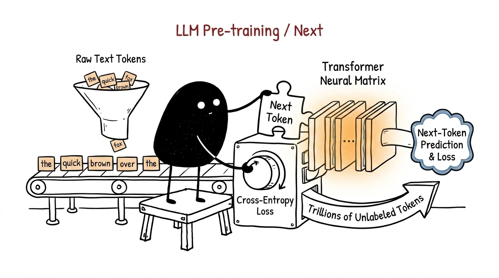
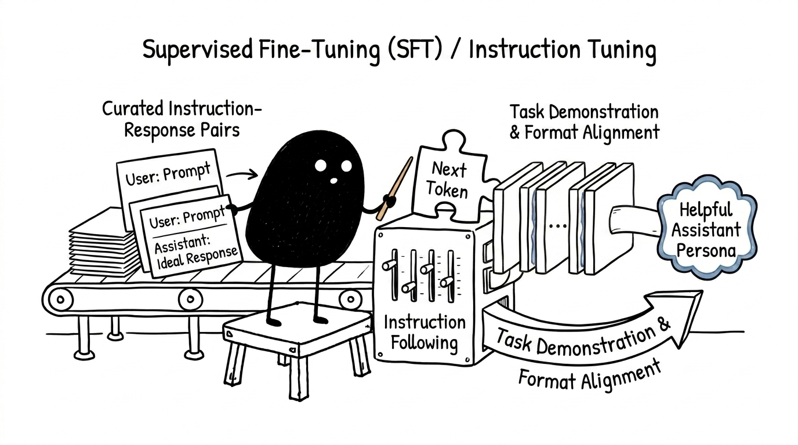
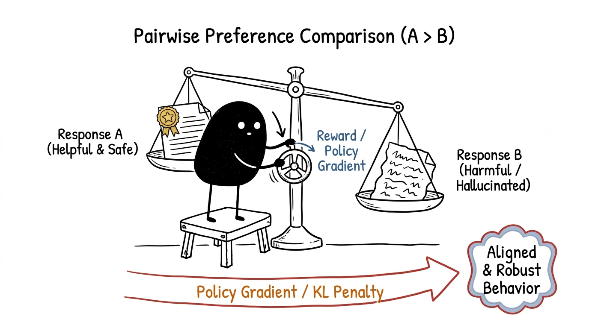

An end-to-end technical guide to Pre-training, Supervised Fine-Tuning (SFT), and Preference Alignment (RLHF / DPO).
Training a modern Large Language Model (LLM) is not a single monolithic training run. It is an industrial machine learning pipeline divided into three distinct operational phases: knowledge acquisition (Pre-training), conversational protocol adaptation (Supervised Fine-Tuning), and preference calibration (Reinforcement Learning from Human Feedback / Direct Preference Optimization).
Each stage operates under radically different data scales, computational budgets, and optimization criteria. The journey begins with trillions of uncurated web tokens and ends with a calibrated, turn-taking assistant aligned with human intent.
graph TD
A[Massive Web Corpora<br/><i>3–15+ Trillion Tokens</i>] -->|Pre-Training<br/>~99% of Total Compute Budget| B[Base / Foundation Model]
B --> C[Curated Dialogue Demonstrations<br/><i>High-Quality Instruction Pairs</i>]
C -->|Supervised Fine-Tuning<br/>Loss Masked on Target Tokens| D[Instruction-Tuned SFT Model]
D --> E[Pairwise Preference Dataset<br/><i>Chosen vs Rejected Pairs</i>]
E -->|Preference Alignment<br/>DPO / RLHF + KL Penalty| F[Aligned Production Assistant]
Neural networks cannot operate directly on arbitrary strings of Unicode text. Before any matrix multiplications occur, continuous text streams must be converted into a sequence of discrete integer identifiers selected from a predefined, immutable vocabulary V.
Modern language models rely almost universally on subword tokenization schemes such as Byte-Pair Encoding (BPE) (utilized by GPT-4 and LLaMA) or WordPiece / Unigram (utilized by Gemini and Gemma).
BPE begins with a base vocabulary consisting of all individual byte values (256 raw bytes). It then iteratively scans a massive reference text corpus, counting all adjacent pairs of symbols, and iteratively merges the single most frequently occurring symbol pair into a new subword unit. This merge process repeats until the target vocabulary size |V| (typically ranging between 32{,}000 and 128{,}256 entries) is satisfied.
# Conceptual representation of tokenization
text = "Antigravity models learn by predicting"
token_ids = [15420, 2984, 4392, 1205, 14389] # Integer indices into vocabulary V
Each token integer x_t \in \{0, 1, \dots, |V|-1\} serves as a row index into an embedding matrix \mathbf{W}_e \in \mathbb{R}^{|V| \times d_{\text{model}}}, where d_{\text{model}} is the hidden dimension of the transformer (e.g., d_{\text{model}} = 4096). The resulting vector represents the token in a continuous vector space before adding positional encodings.
Pre-training represents the most computationally demanding phase of LLM development, routinely consuming 98% to 99% of the overall GPU FLOPs budget and millions of dollars in electricity. During this phase, the neural network learns world facts, syntactic patterns, programming languages, reasoning heuristics, and semantic relationships purely through self-supervised autoregressive next-token prediction.

During pre-training, the model processes billions of unstructured text documents sourced from Common Crawl, Wikipedia, GitHub, and academic publications. The model learns by playing a continuous game of fill-in-the-blank across sequences of length T.
Given an input sequence of tokens \mathbf{x} = (x_1, x_2, \dots, x_T), the model is trained to maximize the log-likelihood of every token conditioned strictly on the preceding context. To prevent information leakage from future tokens, self-attention layers employ a causal lower-triangular attention mask, setting attention weights from position i to position j > i to -\infty.
The empirical loss function minimized across all training batches is the standard Cross-Entropy Loss:
The transformation pipeline from context tokens to updated weights follows a continuous forward and backward propagation loop:
flowchart LR
A["Context: 'The capital of France is'"] --> B["Multi-Head Causal Transformer"]
B --> C["Linear Output Logits: z ∈ R^|V|"]
C --> D["Softmax Normalization: P(x_t | x_<t)"]
D --> E["Cross-Entropy Loss: L = -log P('Paris')"]
E --> F["AdamW Optimizer: θ ← θ - η ∇L"]
To understand the exact mechanics of a parameter update, consider a toy vocabulary of four tokens: V = \{\text{"apple"}: 0, \text{"banana"}: 1, \text{"cat"}: 2, \text{"dog"}: 3\}.
Suppose the model receives the context "The pet is a" and the true target continuation is "cat" (y = 2).
Logit Projection: The final hidden state vector \mathbf{h} \in \mathbb{R}^{d_{\text{model}}} is multiplied by the unembedding matrix \mathbf{W}_u \in \mathbb{R}^{|V| \times d_{\text{model}}}:
Softmax Normalization:
Loss Evaluation:
Analytical Gradient with Respect to Logits:
The optimizer (typically AdamW with cosine learning rate decay and warmup) backpropagates these gradients through all transformer attention blocks and feed-forward layers to update the parameters \theta:
The allocation of compute between model parameters N and training dataset tokens D is governed by empirical scaling laws. Hoffmann et al. (DeepMind Chinchilla) demonstrated that for compute-optimal training under a fixed compute budget C \approx 6ND:
Historically, early models were significantly undertrained relative to their parameter capacity (e.g., GPT-3 with 175B parameters trained on only 300B tokens). Today, models are trained with a token-to-parameter ratio of at least 20:1 to 100:1 (e.g., LLaMA-3 with 8B parameters trained on over 15 Trillion tokens), trading increased pre-training compute for significantly cheaper per-token inference costs.
A base foundation model is an unconditional probabilistic text predictor. If given the user prompt "Write a Python function to compute Fibonacci numbers", a base model is as likely to generate another exam question as it is to write the solution, because web text contains numerous lists of programming exercises.
Supervised Fine-Tuning (SFT) (also termed Instruction Tuning) conditions the raw model to adopt the persona of an obedient, turn-taking AI assistant that follows instructions rather than simply continuing text.

Conversational datasets are serialized into linear token streams using special delimiter tokens (such as ChatML syntax) that the model cannot emit under standard text distributions. These markers define clear semantic boundaries between system instructions, user inputs, and model outputs:
<|im_start|>system
You are a concise, helpful assistant.<|im_end|>
<|im_start|>user
What is the speed of light in a vacuum?<|im_end|>
<|im_start|>assistant
The speed of light in a vacuum is exactly 299,792,458 meters per second.<|im_end|>
During SFT, standard cross-entropy loss is applied, but with a critical modification: loss masking. The loss contribution and corresponding gradient are strictly zeroed out for all tokens belonging to the system prompt and the user's turn:
If the model were forced to compute loss over the user's prompt tokens, it would expend valuable capacity attempting to model the distribution of arbitrary user questions, degrading its ability to generate high-quality, structured responses.
flowchart TD
subgraph Data ["Structured Input Sequence"]
U["User Prompt:<br/><|im_start|>user\nWhat is the speed of light?<|im_end|>"]
A["Assistant Response:<br/><|im_start|>assistant\nThe speed of light is ~300,000 km/s.<|im_end|>"]
end
U -.->|Loss Mask = 0<br/>(Gradients Zeroed Out)| L["Cross-Entropy Loss Computation"]
A ==>|Loss Mask = 1<br/>(Compute Gradient)| L
L --> UPT["Fine-Tune Model Weights θ"]
High-quality SFT requires relatively few examples (typically between 10{,}000 and 1{,}000{,}000 curated dialogues) compared to pre-training. Modern pipelines frequently utilize synthetic instruction generation (e.g. UltraChat, Evol-Instruct) validated by automated filtering heuristics to ensure diverse task coverage.
While SFT models learn the format of conversation, supervised maximum likelihood training suffers from two fundamental limitations:
Preference alignment steers the model's policy distribution toward human-desirable behaviors (helpfulness, truthfulness, and harmlessness) using pairwise comparative judgements.

Human annotators or specialized AI evaluator models are presented with a prompt x and a pair of completions (y_w, y_l), where y_w is the preferred (winning) response and y_l is the dispreferred (losing) response.
Under the Bradley-Terry formulation, the probability that completion y_w is preferred over y_l is modeled as:
where r(x, y) is a scalar reward value representing the quality of response y for prompt x.
The alignment literature has evolved from complex reinforcement learning pipelines to elegant direct optimization algorithms:
In traditional RLHF (introduced by Christiano et al. and Ouyang et al.):
The frozen reference policy \pi_{\text{ref}} ensures the model does not suffer from reward hacking (e.g., generating endless repetitive text that exploits flaws in the reward model) or catastrophic forgetting of base linguistic competencies.
Rafailov et al. (2023) showed that the constrained RL problem has an exact analytical solution. The implicit reward can be expressed directly in terms of log-probabilities:
Substituting this directly into the Bradley-Terry objective yields the DPO Loss Function:
flowchart TD
P["User Prompt: x"] --> M["Policy Model π_θ"]
P --> R["Reference Model π_ref (Frozen)"]
M -->|Candidate A| Y1["Winning Response: y_w"]
M -->|Candidate B| Y2["Losing Response: y_l"]
Y1 --> DPO["DPO Loss Engine<br/>log σ( β log(π_θ(y_w)/π_ref(y_w)) - β log(π_θ(y_l)/π_ref(y_l)) )"]
Y2 --> DPO
R -.->|Regularization Anchor| DPO
DPO --> OPT["Policy Gradient Optimization"]
DPO completely eliminates the need to train a standalone reward model, sample dynamic rollouts during training, or tune delicate PPO hyperparameter schedules.
The following table summarizes the structural differences across the three core training stages:
| Dimension | Pre-Training | Supervised Fine-Tuning (SFT) | Preference Alignment (DPO / RLHF) |
|---|---|---|---|
| Primary Goal | Knowledge acquisition & linguistic modeling | Instruction following & dialogue format alignment | Nuanced preference calibration & safety guardrails |
| Data Format | Unstructured text documents (web, code, books) | Multi-turn prompt & ideal response pairs | Triplets of (prompt, winning_response, losing_response) |
| Data Scale | 3\text{T} - 15\text{T}+ tokens | 10{,}000 - 1{,}000{,}000 high-quality examples | 50{,}000 - 500{,}000 comparison pairs |
| Loss Function | Causal Next-Token Cross-Entropy | Masked Response Cross-Entropy | Direct Preference Optimization (DPO) / PPO Loss |
| Compute Budget | \approx 98\% - 99\% of total FLOPs | < 1\% of total FLOPs | \approx 1\% of total FLOPs |
| Hardware Setup | Thousands of GPUs (Megatron-LM, FSDP, TP/PP/EP) | Hundreds of GPUs (FSDP, LoRA / Full Parameter) | Hundreds of GPUs (Policy + Reference Model) |
| Output Artifact | Base Foundation Model (e.g. LLaMA-3-8B-Base) |
Instruct/Chat Model (e.g. LLaMA-3-8B-SFT) |
Aligned Assistant (e.g. LLaMA-3-8B-Instruct) |
Test your understanding of the end-to-end training pipeline: